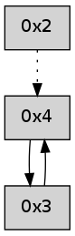

>> << IDX [start] -100 -25 -5 +0 +5 +25 +100 [290.001351118]
 Previous packets
----------------------------------------------------------------------
285.180210 beacon01(adaf) #0 coord=01,02,05,03,04 cycle=368.0ms assoc
-- color-indic=0 64 f8 c2
285.190167 beacon02(adaf) #0 coord=01,02,05,03,04 cycle=368.0ms assoc 64 c2 63
285.200167 beacon05(adaf) #0 coord=01,02,05,03,04 cycle=368.0ms assoc 64 89 2f
285.210168 beacon03(adaf) #0 coord=01,02,05,03,04 cycle=368.0ms assoc 64 0a c9
285.220169 beacon04(adaf) #0 coord=01,02,05,03,04 cycle=368.0ms assoc 64 41 85
285.231787 [Hello(4): seq=80 sym=3 sysInfo= stat=3:15,0,0,0]
----------------------------------------------------------------------
285.598313 beacon01(adaf) #0 coord=01,02,05,03,04 cycle=368.0ms assoc
-- color-indic=0 64 90 69
285.608270 beacon02(adaf) #0 coord=01,02,05,03,04 cycle=368.0ms assoc 64 aa c8
285.628270 beacon03(adaf) #0 coord=01,02,05,03,04 cycle=368.0ms assoc 64 62 62
285.638270 beacon04(adaf) #0 coord=01,02,05,03,04 cycle=368.0ms assoc 64 29 2e
285.649892 [Hello(2): seq=579 asym=4 sysInfo= stat=4:1,0,0,0]
----------------------------------------------------------------------
286.016415 beacon01(adaf) #0 coord=01,02,05,03,04 cycle=368.0ms assoc
-- color-indic=0 64 47 f7
286.026371 beacon02(adaf) #0 coord=01,02,05,03,04 cycle=368.0ms assoc 64 7d 56
286.036372 beacon05(adaf) #0 coord=01,02,05,03,04 cycle=368.0ms assoc 64 36 1a
286.046372 beacon03(adaf) #0 coord=01,02,05,03,04 cycle=368.0ms assoc 64 b5 fc
286.056374 beacon04(adaf) #0 coord=01,02,05,03,04 cycle=368.0ms assoc 64 fe b0
286.068004 [Hello(4): seq=81 sym=3 sysInfo= stat=3:0,0,0,0]
----------------------------------------------------------------------
286.434517 beacon01(adaf) #0 coord=01,02,05,03,04 cycle=368.0ms assoc
-- color-indic=0 64 87 07
286.444472 beacon02(adaf) #0 coord=01,02,05,03,04 cycle=368.0ms assoc 64 bd a6
286.454474 beacon05(adaf) #0 coord=01,02,05,03,04 cycle=368.0ms assoc 64 f6 ea
286.464476 beacon03(adaf) #0 coord=01,02,05,03,04 cycle=368.0ms assoc 64 75 0c
286.474474 beacon04(adaf) #0 coord=01,02,05,03,04 cycle=368.0ms assoc 64 3e 40
286.486093 [Hello(2): seq=580 asym=4 sysInfo= stat=4:2,0,0,0]
----------------------------------------------------------------------
286.852618 beacon01(adaf) #0 coord=01,02,05,03,04 cycle=368.0ms assoc
-- color-indic=0 64 50 99
286.862576 beacon02(adaf) #0 coord=01,02,05,03,04 cycle=368.0ms assoc 64 6a 38
286.882577 beacon03(adaf) #0 coord=01,02,05,03,04 cycle=368.0ms assoc 64 a2 92
286.892576 beacon04(adaf) #0 coord=01,02,05,03,04 cycle=368.0ms assoc 64 e9 de
286.904196 [Hello(4): seq=82 sym=3 sysInfo= stat=3:1,0,0,0]
----------------------------------------------------------------------
287.270720 beacon01(adaf) #0 coord=01,02,05,03,04 cycle=368.0ms assoc
-- color-indic=0 64 38 32
287.280677 beacon02(adaf) #0 coord=01,02,05,03,04 cycle=368.0ms assoc 64 02 93
287.290677 beacon05(adaf) #0 coord=01,02,05,03,04 cycle=368.0ms assoc 64 49 df
287.300676 beacon03(adaf) #0 coord=01,02,05,03,04 cycle=368.0ms assoc 64 ca 39
287.310678 beacon04(adaf) #0 coord=01,02,05,03,04 cycle=368.0ms assoc 64 81 75
287.322324 [Hello(2): seq=581 asym=4 sysInfo= stat=4:3,0,0,0]
----------------------------------------------------------------------
287.688822 beacon01(adaf) #0 coord=01,02,05,03,04 cycle=368.0ms assoc
-- color-indic=0 64 ef ac
287.698779 beacon02(adaf) #0 coord=01,02,05,03,04 cycle=368.0ms assoc 64 d5 0d
287.708779 beacon05(adaf) #0 coord=01,02,05,03,04 cycle=368.0ms assoc 64 9e 41
287.718781 beacon03(adaf) #0 coord=01,02,05,03,04 cycle=368.0ms assoc 64 1d a7
287.728779 beacon04(adaf) #0 coord=01,02,05,03,04 cycle=368.0ms assoc 64 56 eb
287.740419 [Hello(4): seq=83 sym=3 sysInfo= stat=3:2,0,0,0]
----------------------------------------------------------------------
288.106924 beacon01(adaf) #0 coord=01,02,05,03,04 cycle=368.0ms assoc
-- color-indic=0 64 f9 6c
288.116880 beacon02(adaf) #0 coord=01,02,05,03,04 cycle=368.0ms assoc 64 c3 cd
288.126880 beacon05(adaf) #0 coord=01,02,05,03,04 cycle=368.0ms assoc 64 88 81
288.136880 beacon03(adaf) #0 coord=01,02,05,03,04 cycle=368.0ms assoc 64 0b 67
288.146882 beacon04(adaf) #0 coord=01,02,05,03,04 cycle=368.0ms assoc 64 40 2b
288.158519 [Hello(2): seq=582 asym=4 sysInfo= stat=4:4,0,0,0]
288.160549 ..2e2100 -- association-request >>>> 0005
288.162786 0005 -- MAC-command=14 payload=00 21 2e ff ff 00 54 7d 01 05 00 bd 37
288.165464 0001 -- MAC-command=15 payload=00 21 2e ff ff 00 54 7d 06 00 00 00 ff c7
288.168170 ..2e2100->..2e2100 -- association-response successful addr=0006
----------------------------------------------------------------------
288.525025 beacon01(adaf) #0 coord=01,02,05,03,04,06 cycle=432.0ms assoc
-- color-indic=0 64 1c e8
288.534987 beacon02(adaf) #0 coord=01,02,05,03,04,06 cycle=432.0ms assoc 64 4d 17
288.544988 beacon05(adaf) #0 coord=01,02,05,03,04,06 cycle=432.0ms assoc 64 eb 3d
288.554988 beacon03(adaf) #0 coord=01,02,05,03,04,06 cycle=432.0ms assoc 64 77 19
288.564987 beacon04(adaf) #0 coord=01,02,05,03,04,06 cycle=432.0ms assoc 64 d1 33
288.574988 beacon06(adaf) #0 coord=01,02,05,03,04,06 cycle=432.0ms assoc 64 a5 2f
288.586593 [Hello(4): seq=84 sym=3 sysInfo= stat=3:3,0,0,0]
----------------------------------------------------------------------
289.017136 beacon01(adaf) #0 coord=01,02,05,03,04,06 cycle=432.0ms assoc
-- color-indic=0 64 d8 87
289.027096 beacon02(adaf) #0 coord=01,02,05,03,04,06 cycle=432.0ms assoc 64 89 78
289.037097 beacon05(adaf) #0 coord=01,02,05,03,04,06 cycle=432.0ms assoc 64 2f 52
289.047097 beacon03(adaf) #0 coord=01,02,05,03,04,06 cycle=432.0ms assoc 64 b3 76
289.057097 beacon04(adaf) #0 coord=01,02,05,03,04,06 cycle=432.0ms assoc 64 15 5c
289.067098 beacon06(adaf) #0 coord=01,02,05,03,04,06 cycle=432.0ms assoc 64 61 40
----------------------------------------------------------------------
289.509243 beacon01(adaf) #0 coord=01,02,05,03,04,06 cycle=432.0ms assoc
-- color-indic=0 64 86 e6
289.519204 beacon02(adaf) #0 coord=01,02,05,03,04,06 cycle=432.0ms assoc 64 d7 19
289.529204 beacon05(adaf) #0 coord=01,02,05,03,04,06 cycle=432.0ms assoc 64 71 33
289.539205 beacon03(adaf) #0 coord=01,02,05,03,04,06 cycle=432.0ms assoc 64 ed 17
289.549204 beacon04(adaf) #0 coord=01,02,05,03,04,06 cycle=432.0ms assoc 64 4b 3d
289.559206 beacon06(adaf) #0 coord=01,02,05,03,04,06 cycle=432.0ms assoc 64 3f 21
289.570832 [Hello(4): seq=85 sym=3 sysInfo= stat=3:4,0,0,0]